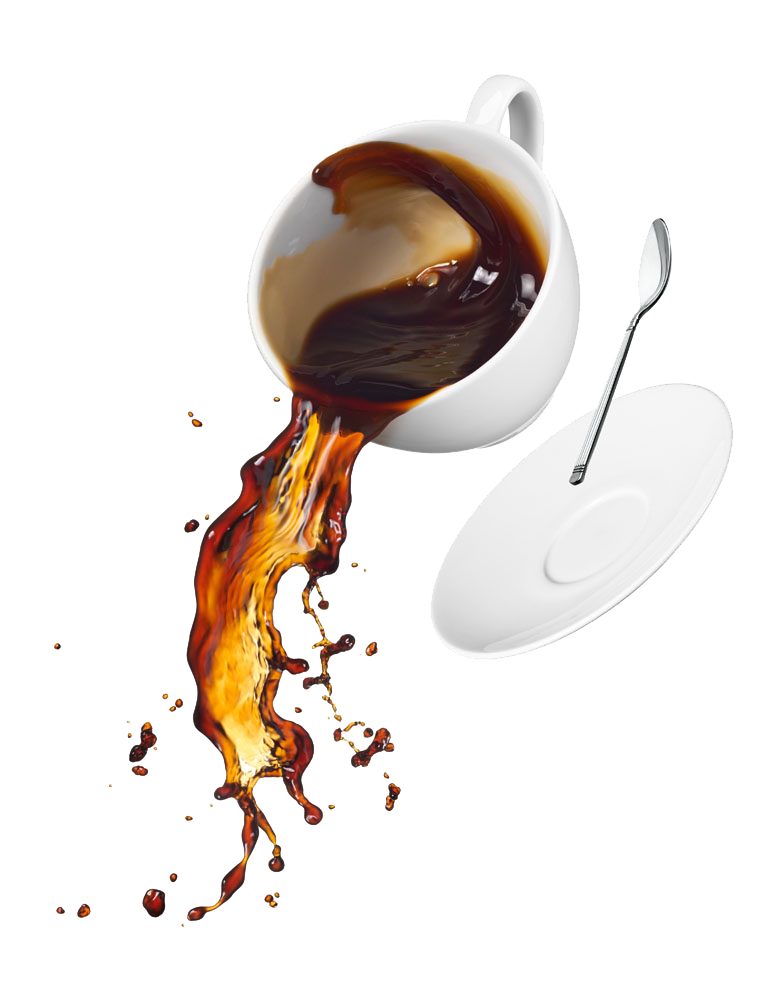
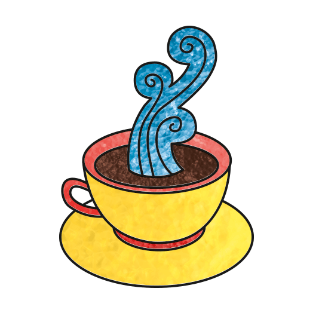
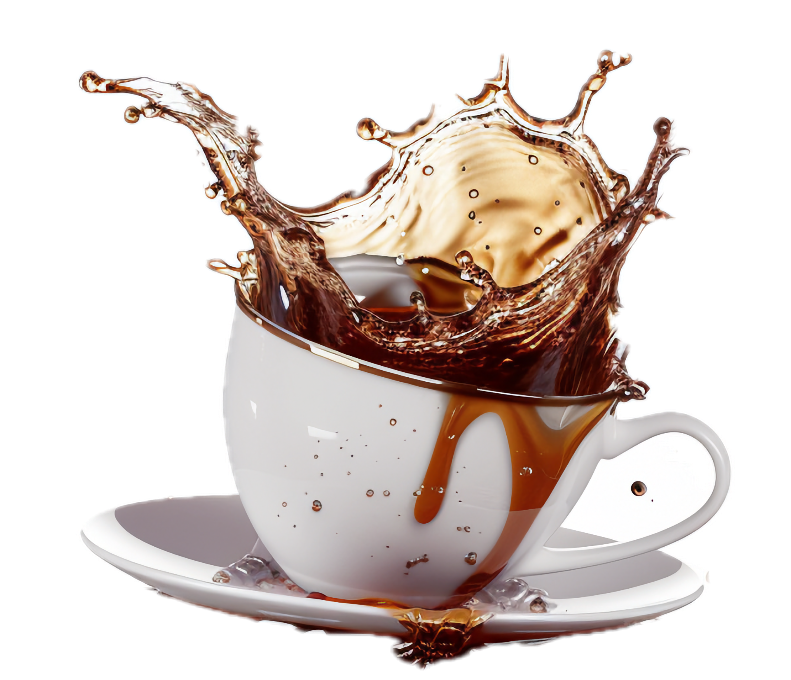

Smart Brew Assistant
Initializing...
Brew Setup
Import
Load .YAML
Scan QR Code
Official Directory
🛠️ Builder
Select Recipe
Loading configs...
Brew Method
Loading...
Roast
Very Light
Light
Medium Light
Medium
Medium Dark
Dark
Very Dark
Process
Washed
Coffee Dose (g)
Water Ratio
🔒 Locked
1:
17
Config Name
Brewing Tool
Hario V60
Grinder Name
Grind Size
Expected Profile
Brew Notes
Pour Steps
Preview Recipe
+ Add Step
✓ Stage Method
Bundled in Config:
Export .yaml
Share / Save QR
Extraction Profile
Share QR
Target Yield
255
g
Brew Temp
92–96
°C
Awaiting Configuration...
© 2026 Smart Brew Assistant™
Crafted by Hritik Sharma



Recipe Preview
Scan & Brew
Morning Brew
Download QR Card (PNG)
Copy Direct Link